Catalog: What a Mess!
Slides available at:
slides.mobiusconsortium.org/blake/evergreencatclean
Created by Blake Graham-Henderson / blake@mobiusconsortium.org
Justin Hopkins helped too / justin@mobiusconsortium.org
Press ESC to browse slides
What's broken?
- Bib formats
- Copy attachments
- Bib identity crisis
- Duplicate Bibs
Who broke it?
Funny story...
This guy.

JUST KIDDING!
Seriously though,
Everyone's data is different.
What's broken?
- Bib formats
- Copy attachments
- Bib identity crisis
Duplicate Bibs(hooray‽)
How do we solve it?
- Query?
SELECT ID FROM BIBLIO.RECORD_ENTRY WHERE ID IN
(SELECT ID FROM metabib.record_attr_flat where attr='icon_format' and value 'cdaudiobook')
AND
ID IN (SELECT RECORD FROM ASSET.CALL_NUMBER WHERE NOT DELETED AND ID IN(
SELECT CALL_NUMBER FROM ASSET.COPY WHERE NOT DELETED AND CIRC_MODIFIER IS NOT 'AudioBook'
)
)- How do we know the icon is correct?
Let's get serious
- Create a schema CREATE SCHEMA seekdestroy
- Create useful tables seekdestroy.job
seekdestroy.bib_score
seekdestroy.bib_merge
seekdestroy.bib_match
seekdestroy.problem_bibs
seekdestroy.call_number_move
seekdestroy.copy_move
seekdestroy.bib_marc_update
Scour the MARC
Create a scoring system
Electronic phrases
- electronic resource
- ebook
- eaudiobook
- overdrive
- download
- ebrary
- electronic reproduction
- ebscohost
- netlibrary
Audiobook phrases
- audiobook
- audio book
- compact dis
- sound dis
- hachette audio
- books on tape
- audiodisc
- Random House Audio
- Talking books
- Recorded Books
- sound casse
Large Print Book phrases
- Large type books
- Large print
- lg print
- SightSaving
- lg. print
- lg prt.
- lg. prt.
- Thorndike Press
- centerpoint
- center point
Video phrases
- dvd
- video recording
- video format
- videorecording
- videodisc
- interview with the producer
- original TV promo
- Special features
- screenplay
Music phrases
- music
- sound record, soundrecord
- sound dis, Compact dis
- song
- Piano
- Jazz
- Saxophone
- Symphony
- Orchestra
- vocals
- sound track
- soundtrack
- instrumentals
- guitar
- perform
- composer
Results
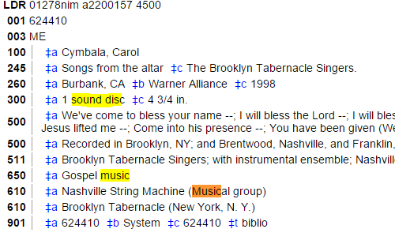
- 2 Points Music
- 1 Point Audiobook
- First Place: Music
- Second Place: Audiobook
- Scoring Distance: 1
Music phrases
music,sound record,soundrecord,
sound dis,Compact dis,song,
Piano,Jazz,Saxophone,Symphony,
Orchestra,vocals,sound track,soundtrack,
instrumentals,guitar,perform,composer
music,sound record,soundrecord,
sound dis,Compact dis,song,
Piano,Jazz,Saxophone,Symphony,
Orchestra,vocals,sound track,soundtrack,
instrumentals,guitar,perform,composer
Audiobook phrases
audiobook,audio book,compact dis,sound dis,
hachette audio,books on tape,audiodisc,
Random House Audio,Talking books,Recorded Books,
sound casse
audiobook,audio book,compact dis,sound dis,
hachette audio,books on tape,audiodisc,
Random House Audio,Talking books,Recorded Books,
sound casse
Results
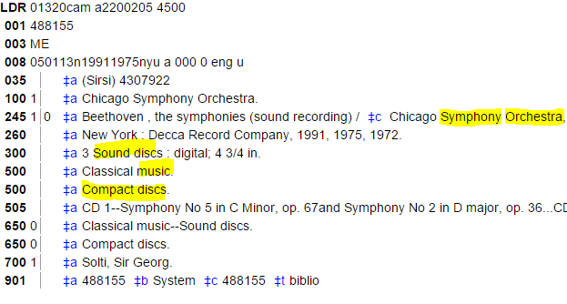
- 5 Points Music
- 2 Points Audiobook
- First Place: Music
- Second Place: Audiobook
- Scoring Distance: 3
- 245 is special
Music phrases
music,sound record,soundrecord,
sound dis,Compact dis,song,
Piano,Jazz,Saxophone,Symphony,
Orchestra,vocals,sound track,soundtrack,
instrumentals,guitar,perform,composer
music,sound record,soundrecord,
sound dis,Compact dis,song,
Piano,Jazz,Saxophone,Symphony,
Orchestra,vocals,sound track,soundtrack,
instrumentals,guitar,perform,composer
Audiobook phrases
audiobook,audio book,compact dis,sound dis,
hachette audio,books on tape,audiodisc,
Random House Audio,Talking books,Recorded Books,
sound casse
audiobook,audio book,compact dis,sound dis,
hachette audio,books on tape,audiodisc,
Random House Audio,Talking books,Recorded Books,
sound casse
Results
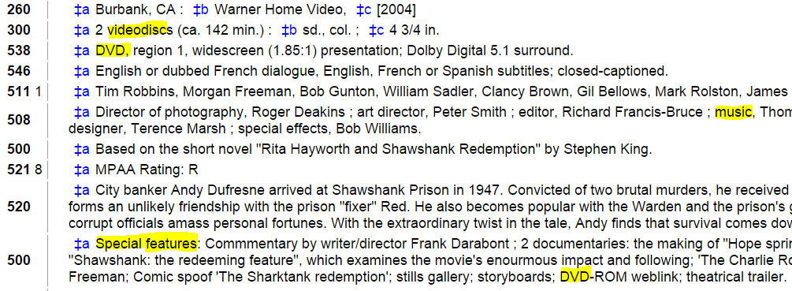
- 3 Points Video
- 1 Point Music
- First Place: Video
- Second Place: Music
- Scoring Distance: 2
Music phrases
music,sound record,soundrecord,
sound dis,Compact dis,song,
Piano,Jazz,Saxophone,Symphony,
Orchestra,vocals,sound track,soundtrack,
instrumentals,guitar,perform,composer
music,sound record,soundrecord,
sound dis,Compact dis,song,
Piano,Jazz,Saxophone,Symphony,
Orchestra,vocals,sound track,soundtrack,
instrumentals,guitar,perform,composer
Video phrases
dvd,video recording,video format,videorecording,
videodisc,interview with the producer,original TV promo,
Special features,screenplay
dvd,video recording,video format,videorecording,
videodisc,interview with the producer,original TV promo,
Special features,screenplay
Finalize the "auto" query
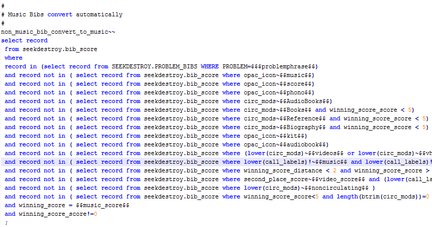
Let's break it down...
We don't want
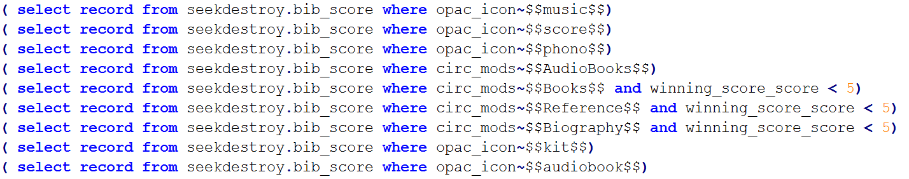
We don't want
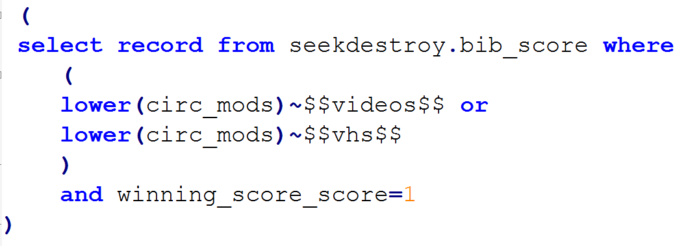
We don't want
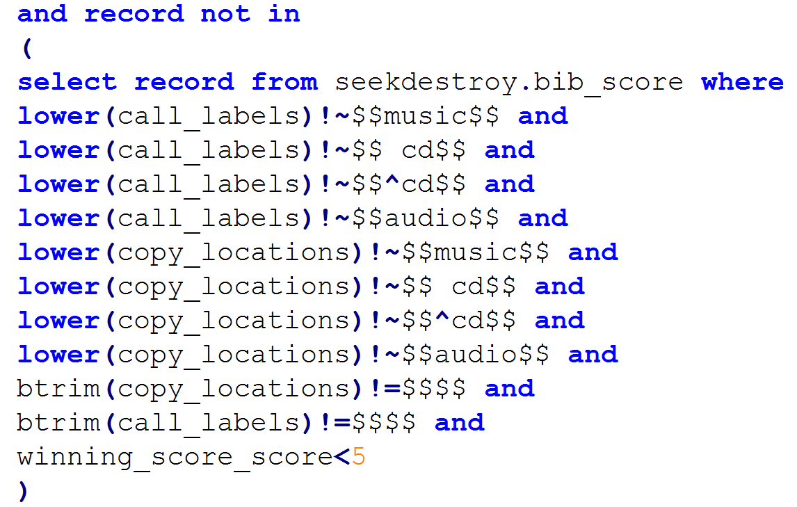
We don't want
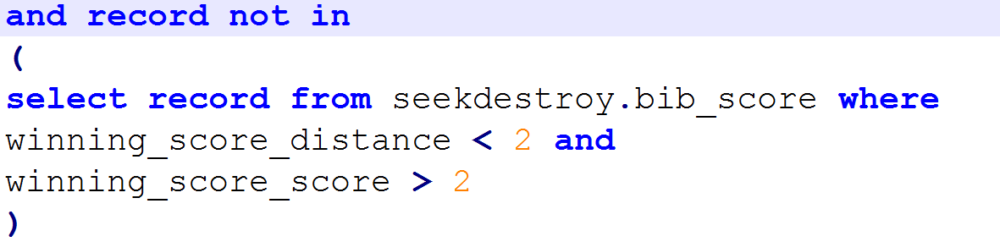
We don't want
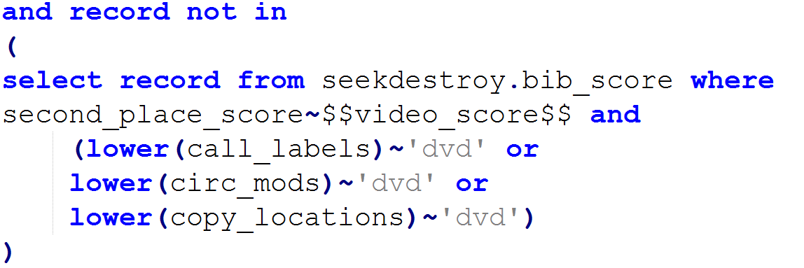
We don't want
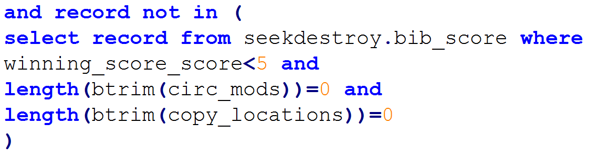
We want
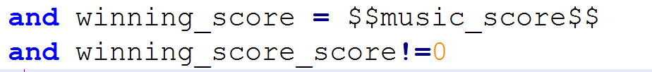
Now we can do something!
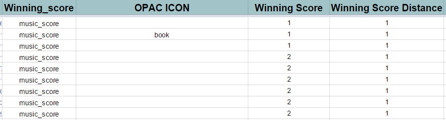
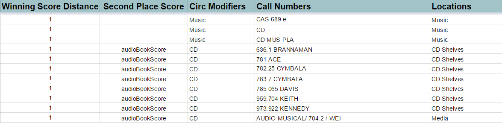
This is interesting!
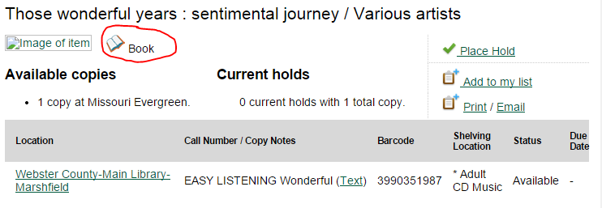
This is interesting!
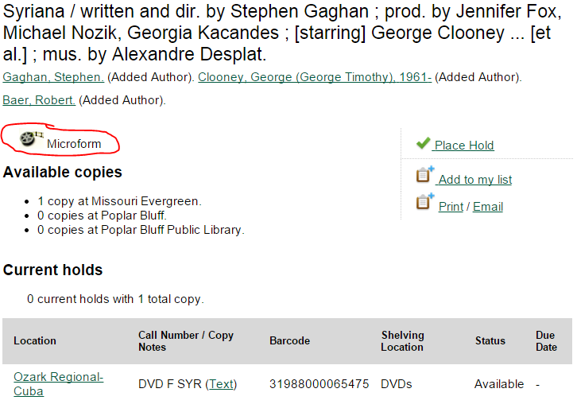
What we did
Electronic
- Converted 5,691 Bibs to Electronic
- 8,992 Physical Items Moved from Electronic Bibs
- 1,304 Physical Items Needs Humans
Audiobook
- Converted 8,321 Bibs to Audiobook
- 339 Needs Humans
DVD
- Converted 25,555 Bibs to DVD
- 1,623 Needs Humans
Large Print
- Converted 17,450 Bibs to Large Print
- 1026 Needs Humans
THE END
Blake Graham-Henderson
MOBIUS
blake@mobiusconsortium.org
Slides available at:
slides.mobiusconsortium.org/blake/evergreencatclean
Github repo:
https://github.com/mcoia/mobius_evergreen/tree/master/seek_and_destroy